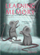
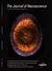
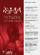
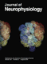

|
||||||||||||||||||||||||||
|
||||||||||||||||||||||||||
|
||||||||||||||||||||||||||

Previous Article | Next Article
The Journal of Neuroscience, August 15, 2000, 20(16):6225-6231
The Role of Ventromedial Prefrontal Cortex in the Recovery of Extinguished Fear
Gregory J. Quirk, Gregory K. Russo, Jill L. Barron, and Kelimer Lebron Department of Physiology, Ponce School of Medicine, Ponce, Puerto Rico 00732
Conditioned fear responses to a tone paired with footshock extinguish when the tone is presented repeatedly in the absence of shock. Rather than erase the tone-shock association, extinction is thought to involve new learning accompanied by inhibition of conditioned responding. Despite much interest in extinction from a clinical perspective, little is known about the neural circuits that are involved. Although the prefrontal cortex has a well established role in the inhibition of inappropriate behaviors, previous reports have disagreed as to the role of the ventromedial prefrontal cortex (vmPFC) in extinction. We have reexamined the effects of electrolytic vmPFC lesions made before training on the acquisition, extinction, and recovery of conditioned fear responses in a 2 d experiment. On Day 1 vmPFC lesions had no effect on acquisition or extinction of conditioned freezing and suppression of bar pressing. On Day 2 sham rats recovered only 27% of their acquired freezing, whereas vmPFC-lesioned rats recovered 86%, which was indistinguishable from a control group that never received extinction. The high recovery in lesioned rats could not be attributed to decreased motivation or altered sensitivity to footshock. vmPFC lesions that spared the caudal infralimbic (IL) nucleus had no effect. Thus, the vmPFC (particularly the IL nucleus) is not necessary for expression of extinction, but it is necessary for the recall of extinction learning after a long delay. These data suggest a role of the vmPFC in consolidation of extinction learning or the recall of contexts in which extinction took place.
Key words: extinction; infralimbic; prelimbic; fear conditioning; amygdala; inhibition
Copyright © 2000 Society for Neuroscience 0270-6474/00/20166225-07$05.00/0
This article has been cited by other articles:
D. E. Fontanez-Nuin, E. Santini, G. J. Quirk, and J. T. Porter
Memory for Fear Extinction Requires mGluR5-Mediated Activation of Infralimbic Neurons
Cereb Cortex, August 12, 2010; (2010) bhq147v1.
[Abstract] [Full Text] [PDF]
J. H. Kim, S. Li, and R. Richardson
Immunohistochemical Analyses of Long-Term Extinction of Conditioned Fear in Adolescent Rats
Cereb Cortex, June 24, 2010; (2010) bhq116v1.
[Abstract] [Full Text] [PDF]

S. E. Baran, C. E. Armstrong, D. C. Niren, and C. D. Conrad
Prefrontal cortex lesions and sex differences in fear extinction and perseveration
Learn. Mem., May 5, 2010; 17(5): 267 - 278.
[Abstract] [Full Text] [PDF]
R. T. LaLumiere, K. E. Niehoff, and P. W. Kalivas
The infralimbic cortex regulates the consolidation of extinction after cocaine self-administration
Learn. Mem., March 23, 2010; 17(4): 168 - 175.
[Abstract] [Full Text] [PDF]
O. Holtzman-Assif, V. Laurent, and R. F. Westbrook
Blockade of dopamine activity in the nucleus accumbens impairs learning extinction of conditioned fear
Learn. Mem., February 13, 2010; 17(2): 71 - 75.
[Abstract] [Full Text] [PDF]
V. Laurent and R. F. Westbrook
Role of the basolateral amygdala in the reinstatement and extinction of fear responses to a previously extinguished conditioned stimulus
Learn. Mem., February 13, 2010; 17(2): 86 - 96.
[Abstract] [Full Text] [PDF]
J. Park and J.-S. Choi
Long-term synaptic changes in two input pathways into the lateral nucleus of the amygdala underlie fear extinction
Learn. Mem., February 9, 2010; 17(1): 23 - 34.
[Abstract] [Full Text] [PDF]
D. C. Choi, K. A. Maguschak, K. Ye, S.-W. Jang, K. M. Myers, and K. J. Ressler
Prelimbic cortical BDNF is required for memory of learned fear but not extinction or innate fear
PNAS, February 9, 2010; 107(6): 2675 - 2680.
[Abstract] [Full Text] [PDF]

S. C. Kim, Y. S. Jo, I. H. Kim, H. Kim, and J.-S. Choi
Lack of Medial Prefrontal Cortex Activation Underlies the Immediate Extinction Deficit
J. Neurosci., January 20, 2010; 30(3): 832 - 837.
[Abstract] [Full Text] [PDF]
K. M. Tye, J. J. Cone, W. W. Schairer, and P. H. Janak
Amygdala Neural Encoding of the Absence of Reward during Extinction
J. Neurosci., January 6, 2010; 30(1): 116 - 125.
[Abstract] [Full Text] [PDF]
E. Y. Kimchi and M. Laubach
The Dorsomedial Striatum Reflects Response Bias during Learning
J. Neurosci., November 25, 2009; 29(47): 14891 - 14902.
[Abstract] [Full Text] [PDF]
M. Koenigs and J. Grafman
Posttraumatic Stress Disorder: The Role of Medial Prefrontal Cortex and Amygdala
Neuroscientist, October 1, 2009; 15(5): 540 - 548.
[Abstract] [PDF]
S.-C. Mao, H.-C. Lin, and P.-W. Gean
Augmentation of Fear Extinction by Infusion of Glycine Transporter Blockers into the Amygdala
Mol. Pharmacol., August 1, 2009; 76(2): 369 - 378.
[Abstract] [Full Text] [PDF]
E. Knapska and S. Maren
Reciprocal patterns of c-Fos expression in the medial prefrontal cortex and amygdala after extinction and renewal of conditioned fear
Learn. Mem., July 24, 2009; 16(8): 486 - 493.
[Abstract] [Full Text] [PDF]
A. Burgos-Robles, I. Vidal-Gonzalez, and G. J. Quirk
Sustained Conditioned Responses in Prelimbic Prefrontal Neurons Are Correlated with Fear Expression and Extinction Failure
J. Neurosci., July 1, 2009; 29(26): 8474 - 8482.
[Abstract] [Full Text] [PDF]
H. Yu, Y. Wang, S. Pattwell, D. Jing, T. Liu, Y. Zhang, K. G. Bath, F. S. Lee, and Z.-Y. Chen
Variant BDNF Val66Met Polymorphism Affects Extinction of Conditioned Aversive Memory
J. Neurosci., April 1, 2009; 29(13): 4056 - 4064.
[Abstract] [Full Text] [PDF]
J. Xu, Y. Zhu, A. Contractor, and S. F. Heinemann
mGluR5 Has a Critical Role in Inhibitory Learning
J. Neurosci., March 25, 2009; 29(12): 3676 - 3684.
[Abstract] [Full Text] [PDF]
F. Sotres-Bayon, L. Diaz-Mataix, D. E.A. Bush, and J. E. LeDoux
Dissociable Roles for the Ventromedial Prefrontal Cortex and Amygdala in Fear Extinction: NR2B Contribution
Cereb Cortex, February 1, 2009; 19(2): 474 - 482.
[Abstract] [Full Text] [PDF]
N. Mamiya, H. Fukushima, A. Suzuki, Z. Matsuyama, S. Homma, P. W. Frankland, and S. Kida
Brain Region-Specific Gene Expression Activation Required for Reconsolidation and Extinction of Contextual Fear Memory
J. Neurosci., January 14, 2009; 29(2): 402 - 413.
[Abstract] [Full Text] [PDF]
C.-h. Chang and S. Maren
Early extinction after fear conditioning yields a context-independent and short-term suppression of conditional freezing in rats
Learn. Mem., January 7, 2009; 16(1): 62 - 68.
[Abstract] [Full Text] [PDF]
H.-C. Lin, S.-C. Mao, C.-L. Su, and P.-W. Gean
The Role of Prefrontal Cortex CB1 Receptors in the Modulation of Fear Memory
Cereb Cortex, January 1, 2009; 19(1): 165 - 175.
[Abstract] [Full Text] [PDF]
A. Martens, J. Greenberg, and J. J. B. Allen
Self-Esteem and Autonomic Physiology: Parallels Between Self-Esteem and Cardiac Vagal Tone as Buffers of Threat
Personality and Social Psychology Review, November 1, 2008; 12(4): 370 - 389.
[Abstract] [PDF]
L. B. Moraes Resstel, F. M. de Aguiar Correa, and F. S. Guimaraes
The Expression of Contextual Fear Conditioning Involves Activation of an NMDA Receptor-Nitric Oxide Pathway in the Medial Prefrontal Cortex
Cereb Cortex, September 1, 2008; 18(9): 2027 - 2035.
[Abstract] [Full Text] [PDF]
A. R. Davis, A. D. Shields, J. L. Brigman, M. Norcross, Z. A. McElligott, A. Holmes, and D. G. Winder
Yohimbine impairs extinction of cocaine-conditioned place preference in an {alpha}2-adrenergic receptor independent process
Learn. Mem., August 26, 2008; 15(9): 667 - 676.
[Abstract] [Full Text] [PDF]
V. B. McGinty and A. A. Grace
Selective Activation of Medial Prefrontal-to-Accumbens Projection Neurons by Amygdala Stimulation and Pavlovian Conditioned Stimuli
Cereb Cortex, August 1, 2008; 18(8): 1961 - 1972.
[Abstract] [Full Text] [PDF]
Y. L. Reekie, K. Braesicke, M. S. Man, and A. C. Roberts
Uncoupling of behavioral and autonomic responses after lesions of the primate orbitofrontal cortex
PNAS, July 15, 2008; 105(28): 9787 - 9792.
[Abstract] [Full Text] [PDF]
D. Schiller, C. K. Cain, N. G. Curley, J. S. Schwartz, S. A. Stern, J. E. LeDoux, and E. A. Phelps
Evidence for recovery of fear following immediate extinction in rats and humans
Learn. Mem., May 28, 2008; 15(6): 394 - 402.
[Abstract] [Full Text] [PDF]
A. Ishikawa, F. Ambroggi, S. M. Nicola, and H. L. Fields
Dorsomedial Prefrontal Cortex Contribution to Behavioral and Nucleus Accumbens Neuronal Responses to Incentive Cues
J. Neurosci., May 7, 2008; 28(19): 5088 - 5098.
[Abstract] [Full Text] [PDF]
E. Santini, G. J. Quirk, and J. T. Porter
Fear Conditioning and Extinction Differentially Modify the Intrinsic Excitability of Infralimbic Neurons
J. Neurosci., April 9, 2008; 28(15): 4028 - 4036.
[Abstract] [Full Text] [PDF]
M. V. Baratta, T. R. Lucero, J. Amat, L. R. Watkins, and S. F. Maier
Role of the ventral medial prefrontal cortex in mediating behavioral control-induced reduction of later conditioned fear
Learn. Mem., January 29, 2008; 15(2): 84 - 87.
[Abstract] [Full Text] [PDF]
D. Mueller, J. T. Porter, and G. J. Quirk
Noradrenergic Signaling in Infralimbic Cortex Increases Cell Excitability and Strengthens Memory for Fear Extinction
J. Neurosci., January 9, 2008; 28(2): 369 - 375.
[Abstract] [Full Text] [PDF]
Y. S. Jo, E. H. Park, I. H. Kim, S. K. Park, H. Kim, H. T. Kim, and J.-S. Choi
The Medial Prefrontal Cortex Is Involved in Spatial Memory Retrieval under Partial-Cue Conditions
J. Neurosci., December 5, 2007; 27(49): 13567 - 13578.
[Abstract] [Full Text] [PDF]
J. M. Langton, J. H. Kim, J. Nicholas, and R. Richardson
The effect of the NMDA receptor antagonist MK-801 on the acquisition and extinction of learned fear in the developing rat
Learn. Mem., September 25, 2007; 14(10): 665 - 668.
[Abstract] [Full Text] [PDF]
S. Hugues and R. Garcia
Reorganization of learning-associated prefrontal synaptic plasticity between the recall of recent and remote fear extinction memory
Learn. Mem., August 1, 2007; 14(8): 520 - 524.
[Abstract] [Full Text] [PDF]
E. L. Rich and M. L. Shapiro
Prelimbic/Infralimbic Inactivation Impairs Memory for Multiple Task Switches, But Not Flexible Selection of Familiar Tasks
J. Neurosci., April 25, 2007; 27(17): 4747 - 4755.
[Abstract] [Full Text] [PDF]

K. Felmingham, A. Kemp, L. Williams, P. Das, G. Hughes, A. Peduto, and R. Bryant
Changes in Anterior Cingulate and Amygdala After Cognitive Behavior Therapy of Posttraumatic Stress Disorder
Psychological Science, February 1, 2007; 18(2): 127 - 129.
[PDF]
K. A. Corcoran and G. J. Quirk
Activity in Prelimbic Cortex Is Necessary for the Expression of Learned, But Not Innate, Fears
J. Neurosci., January 24, 2007; 27(4): 840 - 844.
[Abstract] [Full Text] [PDF]
C. L. Wellman, A. Izquierdo, J. E. Garrett, K. P. Martin, J. Carroll, R. Millstein, K.-P. Lesch, D. L. Murphy, and A. Holmes
Impaired Stress-Coping and Fear Extinction and Abnormal Corticolimbic Morphology in Serotonin Transporter Knock-Out Mice
J. Neurosci., January 17, 2007; 27(3): 684 - 691.
[Abstract] [Full Text] [PDF]
K. Zushida, M. Sakurai, K. Wada, and M. Sekiguchi
Facilitation of Extinction Learning for Contextual Fear Memory by PEPA: A Potentiator of AMPA Receptors
J. Neurosci., January 3, 2007; 27(1): 158 - 166.
[Abstract] [Full Text] [PDF]
J. Amat, E. Paul, C. Zarza, L. R. Watkins, and S. F. Maier
Previous Experience with Behavioral Control over Stress Blocks the Behavioral and Dorsal Raphe Nucleus Activating Effects of Later Uncontrollable Stress: Role of the Ventral Medial Prefrontal Cortex
J. Neurosci., December 20, 2006; 26(51): 13264 - 13272.
[Abstract] [Full Text] [PDF]
I. Vidal-Gonzalez, B. Vidal-Gonzalez, S. L. Rauch, and G. J. Quirk
Microstimulation reveals opposing influences of prelimbic and infralimbic cortex on the expression of conditioned fear
Learn. Mem., November 1, 2006; 13(6): 728 - 733.
[Abstract] [Full Text] [PDF]
S.-C. Mao, Y.-H. Hsiao, and P.-W. Gean
Extinction Training in Conjunction with a Partial Agonist of the Glycine Site on the NMDA Receptor Erases Memory Trace.
J. Neurosci., August 30, 2006; 26(35): 8892 - 8899.
[Abstract] [Full Text] [PDF]
K. A. Burke, T. M. Franz, N. Gugsa, and G. Schoenbaum
Prior cocaine exposure disrupts extinction of fear conditioning
Learn. Mem., July 1, 2006; 13(4): 416 - 421.
[Abstract] [Full Text] [PDF]
A. Izquierdo, C. L. Wellman, and A. Holmes
Brief Uncontrollable Stress Causes Dendritic Retraction in Infralimbic Cortex and Resistance to Fear Extinction in Mice
J. Neurosci., May 24, 2006; 26(21): 5733 - 5738.
[Abstract] [Full Text] [PDF]
T. V. Gurvits, L. J. Metzger, N. B. Lasko, P. A. Cannistraro, A. S. Tarhan, M. W. Gilbertson, S. P. Orr, A. M. Charbonneau, M. M. Wedig, and R. K. Pitman
Subtle Neurologic Compromise as a Vulnerability Factor for Combat-Related Posttraumatic Stress Disorder: Results of a Twin Study.
Arch Gen Psychiatry, May 1, 2006; 63(5): 571 - 576.
[Abstract] [Full Text] [PDF]
M. Farinelli, O. Deschaux, S. Hugues, A. Thevenet, and R. Garcia
Hippocampal train stimulation modulates recallof fear extinction independently of prefrontalcortex synaptic plasticity and lesions.
Learn. Mem., May 1, 2006; 13(3): 329 - 334.
[Abstract] [Full Text] [PDF]
H.-C. Lin, S.-C. Mao, and P.-W. Gean
Effects of intra-amygdala infusion of CB1 receptor agonists on the reconsolidation of fear-potentiated startle
Learn. Mem., May 1, 2006; 13(3): 316 - 321.
[Abstract] [Full Text] [PDF]
K. M. Myers, K. J. Ressler, and M. Davis
Different mechanisms of fear extinction dependent on length of time since fear acquisition.
Learn. Mem., March 1, 2006; 13(2): 216 - 223.
[Abstract] [Full Text] [PDF]
R. Garcia, C.-h. Chang, and S. Maren
Electrolytic lesions of the medial prefrontal cortex do not interfere with long-term memory of extinction of conditioned fear
Learn. Mem., January 1, 2006; 13(1): 14 - 17.
[Abstract] [Full Text] [PDF]
D. Anglada-Figueroa and G. J. Quirk
Lesions of the Basal Amygdala Block Expression of Conditioned Fear But Not Extinction
J. Neurosci., October 19, 2005; 25(42): 9680 - 9685.
[Abstract] [Full Text] [PDF]
E. Likhtik, J. G. Pelletier, R. Paz, and D. Pare
Prefrontal Control of the Amygdala
J. Neurosci., August 10, 2005; 25(32): 7429 - 7437.
[Abstract] [Full Text] [PDF]
R. Ponnusamy, H. A. Nissim, and M. Barad
Systemic blockade of D2-like dopamine receptors facilitates extinction of conditioned fear in mice
Learn. Mem., July 1, 2005; 12(4): 399 - 406.
[Abstract] [Full Text] [PDF]
C. K. Cain, B. P. Godsil, S. Jami, and M. Barad
The L-type calcium channel blocker nifedipine impairs extinction, but not reduced contingency effects, in mice
Learn. Mem., May 1, 2005; 12(3): 277 - 284.
[Abstract] [Full Text] [PDF]
L. M. Shin, C. I. Wright, P. A. Cannistraro, M. M. Wedig, K. McMullin, B. Martis, M. L. Macklin, N. B. Lasko, S. R. Cavanagh, T. S. Krangel, et al.
A Functional Magnetic Resonance Imaging Study of Amygdala and Medial Prefrontal Cortex Responses to Overtly Presented Fearful Faces in Posttraumatic Stress Disorder
Arch Gen Psychiatry, March 1, 2005; 62(3): 273 - 281.
[Abstract] [Full Text] [PDF]
S. Maren
Building and Burying Fear Memories in the Brain
Neuroscientist, February 1, 2005; 11(1): 89 - 99.
[Abstract] [PDF]
Z. Zhao and M. Davis
Fear-Potentiated Startle in Rats Is Mediated by Neurons in the Deep Layers of the Superior Colliculus/Deep Mesencephalic Nucleus of the Rostral Midbrain through the Glutamate Non-NMDA Receptors
J. Neurosci., November 17, 2004; 24(46): 10326 - 10334.
[Abstract] [Full Text] [PDF]
S. C. Azad, K. Monory, G. Marsicano, B. F. Cravatt, B. Lutz, W. Zieglgansberger, and G. Rammes
Circuitry for Associative Plasticity in the Amygdala Involves Endocannabinoid Signaling
J. Neurosci., November 3, 2004; 24(44): 9953 - 9961.
[Abstract] [Full Text] [PDF]
K. Robleto, A. M. Poulos, and R. F. Thompson
Brain Mechanisms of Extinction of the Classically Conditioned Eyeblink Response
Learn. Mem., September 1, 2004; 11(5): 517 - 524.
[Abstract] [Full Text] [PDF]
F. Sotres-Bayon, D. E.A. Bush, and J. E. LeDoux
Emotional Perseveration: An Update on Prefrontal-Amygdala Interactions in Fear Extinction
Learn. Mem., September 1, 2004; 11(5): 525 - 535.
[Abstract] [Full Text] [PDF]
S. Hugues, O. Deschaux, and R. Garcia
Postextinction Infusion of a Mitogen-Activated Protein Kinase Inhibitor Into the Medial Prefrontal Cortex Impairs Memory of the Extinction of Conditioned Fear
Learn. Mem., September 1, 2004; 11(5): 540 - 543.
[Abstract] [Full Text] [PDF]
K. Lebron, M. R. Milad, and G. J. Quirk
Delayed Recall of Fear Extinction in Rats With Lesions of Ventral Medial Prefrontal Cortex
Learn. Mem., September 1, 2004; 11(5): 544 - 548.
[Abstract] [Full Text] [PDF]
S. E.V. Rhodes and S. Killcross
Lesions of Rat Infralimbic Cortex Enhance Recovery and Reinstatement of an Appetitive Pavlovian Response
Learn. Mem., September 1, 2004; 11(5): 611 - 616.
[Abstract] [Full Text] [PDF]
F. Gonzalez-Lima and A. K. Bruchey
Extinction Memory Improvement by the Metabolic Enhancer Methylene Blue
Learn. Mem., September 1, 2004; 11(5): 633 - 640.
[Abstract] [Full Text] [PDF]

D. Pare, G. J. Quirk, and J. E. Ledoux
New Vistas on Amygdala Networks in Conditioned Fear
J Neurophysiol, July 1, 2004; 92(1): 1 - 9.
[Abstract] [Full Text] [PDF]
D. S. Charney
Psychobiological Mechanisms of Resilience and Vulnerability: Implications for Successful Adaptation to Extreme Stress
Focus, July 1, 2004; 2(3): 368 - 391.
[Abstract] [Full Text] [PDF]
S. Tronel, M. G.P. Feenstra, and S. J. Sara
Noradrenergic Action in Prefrontal Cortex in the Late Stage of Memory Consolidation
Learn. Mem., July 1, 2004; 11(4): 453 - 458.
[Abstract] [Full Text] [PDF]
E. Santini, H. Ge, K. Ren, S. P. de Ortiz, and G. J. Quirk
Consolidation of Fear Extinction Requires Protein Synthesis in the Medial Prefrontal Cortex
J. Neurosci., June 23, 2004; 24(25): 5704 - 5710.
[Abstract] [Full Text] [PDF]
A. Suzuki, S. A. Josselyn, P. W. Frankland, S. Masushige, A. J. Silva, and S. Kida
Memory Reconsolidation and Extinction Have Distinct Temporal and Biochemical Signatures
J. Neurosci., May 19, 2004; 24(20): 4787 - 4795.
[Abstract] [Full Text] [PDF]
K. M. Lattal and T. Abel
Behavioral impairments caused by injections of the protein synthesis inhibitor anisomycin after contextual retrieval reverse with time
PNAS, March 30, 2004; 101(13): 4667 - 4672.
[Abstract] [Full Text] [PDF]
G. J. Quirk
Learning Not to Fear, Faster
Learn. Mem., March 1, 2004; 11(2): 125 - 126.
[Full Text] [PDF]
D. S. Charney
Psychobiological Mechanisms of Resilience and Vulnerability: Implications for Successful Adaptation to Extreme Stress
Am J Psychiatry, February 1, 2004; 161(2): 195 - 216.
[Abstract] [Full Text] [PDF]
L. M. Shin, S. P. Orr, M. A. Carson, S. L. Rauch, M. L. Macklin, N. B. Lasko, P. M. Peters, L. J. Metzger, D. D. Dougherty, P. A. Cannistraro, et al.
Regional Cerebral Blood Flow in the Amygdala and Medial Prefrontal Cortex During Traumatic Imagery in Male and Female Vietnam Veterans With PTSD
Arch Gen Psychiatry, February 1, 2004; 61(2): 168 - 176.
[Abstract] [Full Text] [PDF]
J. A. Rosenkranz, H. Moore, and A. A. Grace
The Prefrontal Cortex Regulates Lateral Amygdala Neuronal Plasticity and Responses to Previously Conditioned Stimuli
J. Neurosci., December 3, 2003; 23(35): 11054 - 11064.
[Abstract] [Full Text] [PDF]
D. J. Krupa and R. F. Thompson
Inhibiting the Expression of a Classically Conditioned Behavior Prevents Its Extinction
J. Neurosci., November 19, 2003; 23(33): 10577 - 10584.
[Abstract] [Full Text] [PDF]
A. Ishikawa and S. Nakamura
Convergence and Interaction of Hippocampal and Amygdalar Projections within the Prefrontal Cortex in the Rat
J. Neurosci., November 5, 2003; 23(31): 9987 - 9995.
[Abstract] [Full Text] [PDF]
G. J. Quirk, E. Likhtik, J. G. Pelletier, and D. Pare
Stimulation of Medial Prefrontal Cortex Decreases the Responsiveness of Central Amygdala Output Neurons
J. Neurosci., September 24, 2003; 23(25): 8800 - 8807.
[Abstract] [Full Text] [PDF]
C.-H. Lin, S.-H. Yeh, H.-Y. Lu, and P.-W. Gean
The Similarities and Diversities of Signal Pathways Leading to Consolidation of Conditioning and Consolidation of Extinction of Fear Memory
J. Neurosci., September 10, 2003; 23(23): 8310 - 8317.
[Abstract] [Full Text] [PDF]
J. A. Hobin, K. A. Goosens, and S. Maren
Context-Dependent Neuronal Activity in the Lateral Amygdala Represents Fear Memories after Extinction
J. Neurosci., September 10, 2003; 23(23): 8410 - 8416.
[Abstract] [Full Text] [PDF]
S. Lissek and O. Gunturkun
Dissociation of Extinction and Behavioral Disinhibition: The Role of NMDA Receptors in the Pigeon Associative Forebrain during Extinction
J. Neurosci., September 3, 2003; 23(22): 8119 - 8124.
[Abstract] [Full Text] [PDF]
D. Barrett, J. Shumake, D. Jones, and F. Gonzalez-Lima
Metabolic Mapping of Mouse Brain Activity after Extinction of a Conditioned Emotional Response
J. Neurosci., July 2, 2003; 23(13): 5740 - 5749.
[Abstract] [Full Text] [PDF]
D. R. Catherall
How Fear Differs From Anxiety
Traumatology, June 1, 2003; 9(2): 76 - 92.
[Abstract] [PDF]
M. A. Pezze, T. Bast, and J. Feldon
Significance of Dopamine Transmission in the Rat Medial Prefrontal Cortex for Conditioned Fear
Cereb Cortex, April 1, 2003; 13(4): 371 - 380.
[Abstract] [Full Text] [PDF]
S. Killcross and E. Coutureau
Coordination of Actions and Habits in the Medial Prefrontal Cortex of Rats
Cereb Cortex, April 1, 2003; 13(4): 400 - 408.
[Abstract] [Full Text] [PDF]
X. Ma and N. Suga
Augmentation of Plasticity of the Central Auditory System by the Basal Forebrain and/or Somatosensory Cortex
J Neurophysiol, January 1, 2003; 89(1): 90 - 103.
[Abstract] [Full Text] [PDF]
D. E. Berman, S. Hazvi, J. Stehberg, A. Bahar, and Y. Dudai
Conflicting Processes in the Extinction of Conditioned Taste Aversion: Behavioral and Molecular Aspects of Latency, Apparent Stagnation, and Spontaneous Recovery
Learn. Mem., January 1, 2003; 10(1): 16 - 25.
[Abstract] [Full Text] [PDF]
G. J. Quirk
Memory for Extinction of Conditioned Fear Is Long-lasting and Persists Following Spontaneous Recovery
Learn. Mem., November 1, 2002; 9(6): 402 - 407.
[Abstract] [Full Text] [PDF]
C. K. Cain, A. M. Blouin, and M. Barad
L-Type Voltage-Gated Calcium Channels Are Required for Extinction, But Not for Acquisition or Expression, of Conditional Fear in Mice
J. Neurosci., October 15, 2002; 22(20): 9113 - 9121.
[Abstract] [Full Text] [PDF]
R. Adolphs
Recognizing emotion from facial expressions: psychological and neurological mechanisms.
Behav Cogn Neurosci Rev, March 1, 2002; 1(1): 21 - 62.
[Abstract] [PDF]
C. Herry and R. Garcia
Prefrontal Cortex Long-Term Potentiation, But Not Long-Term Depression, Is Associated with the Maintenance of Extinction of Learned Fear in Mice
J. Neurosci., January 15, 2002; 22(2): 577 - 583.
[Abstract] [Full Text] [PDF]
K. M. Lattal and T. Abel
Different Requirements for Protein Synthesis in Acquisition and Extinction of Spatial Preferences and Context-Evoked Fear
J. Neurosci., August 1, 2001; 21(15): 5773 - 5780.
[Abstract] [Full Text] [PDF]
R. J. Davidson
The neural circuitry of emotion and affective style: prefrontal cortex and amygdala contributions
Social Science Information, March 1, 2001; 40(1): 11 - 37.
[Abstract] [PDF]